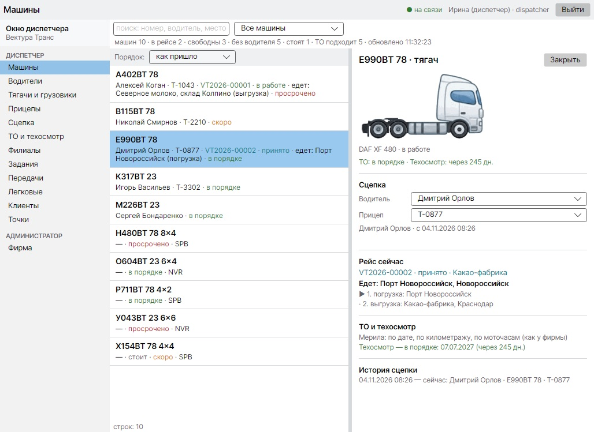
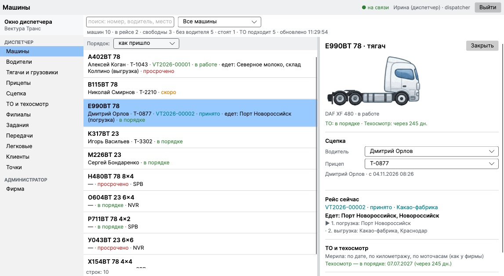
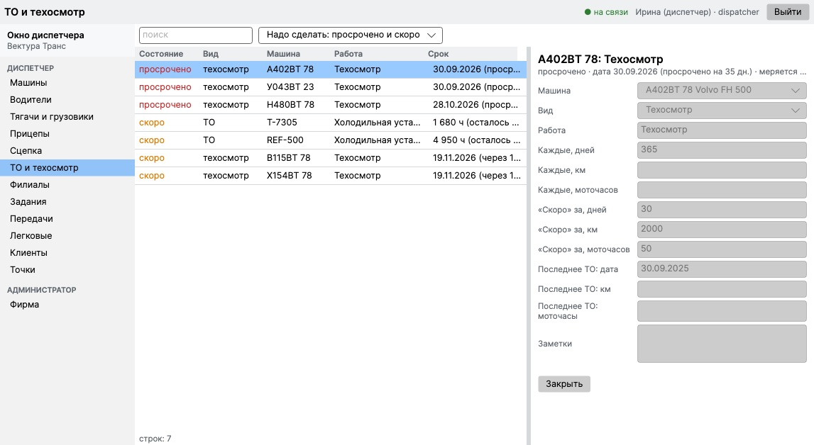
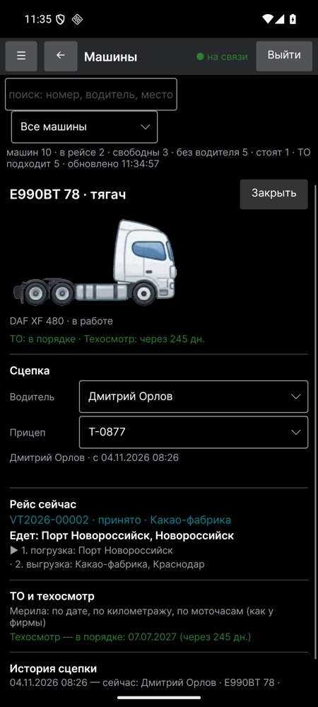

Свой сервер фирмы, окно диспетчера и приложение VecturaBook у водителей — вместе. Водители, машины, прицепы, сцепки, рейсы, филиалы, ТО и сроки — в одном месте, на ваших компьютерах.
Написать намСтоит на вашем компьютере или сервере — Windows или Linux. Данные остаются в фирме, а не в чужом облаке.
Одна программа для офиса и дороги: Windows, Мак и Android. Живой список машин: кто на чём едет и куда.
Кто в работе, а кто нет, какая машина и прицеп у водителя сейчас, история — кто на чём ездил.
Тягачи, грузовики и легковые. Рисунок — по настоящей колёсной формуле (4×2, 6×4, 8×4…), пробег и моточасы.
Каждый прицеп по осям и кузову: где стоит, с какой машиной сцеплен, что по нему подходит.
Водитель + машина + прицеп одной связкой. Перецепка на ходу, каждая смена остаётся в истории.
Задания с точками погрузки и разгрузки. Состояние приходит с телефона водителя: принято, в пути, разгружен.
Каждый филиал ведёт свои машины и людей; чужие филиалы видны только для чтения.
ТО и техосмотр по дате, километрам или моточасам. Просроченное — первым, «скоро» — предупреждение заранее.
VecturaBook Pro доводится под работу конкретной фирмы: ваши грузы, ваши документы, ваши правила для водителей и филиалов. Нужное добавляется, ненужное не мешает.
Разделы, поля, надписи, порядок колонок и вид окна меняются под вас. Снимки ниже — отправная точка, а не застывшая форма.
Водители, машины, прицепы, сроки и история переносятся из вашей прежней системы — таблиц Excel, старой программы или базы. Вы начинаете со своими данными, а не с пустого экрана.
Снимки нынешней версии на проверочных данных. Интерфейс подстраивается под каждого клиента — то, что вы видите, меняется под вашу фирму.




Напишите, сколько у вас машин и филиалов и в чём вы работаете сейчас. Ответим письмом.
germormdev@gmail.com